|
STM32 Motor Control SDK MCFW-6.1.0
Software Development Kit to build applications driving PMSM Motors with STM32
|
Loading...
Searching...
No Matches
|
STM32 Motor Control SDK MCFW-6.1.0
Software Development Kit to build applications driving PMSM Motors with STM32
|
This document describes the software library that implements the 6-step algorithm, also known as a trapezoidal algorithm, contained in the X-CUBE-MCSDK STM32 motor-control software development kits (SDKs) designed for, and to be used with, STM32 microcontrollers. The 6-step library allows the control of a 3-phase permanent magnet (PMSM) or brushless direct current motor (BLDC) and can be used to quickly evaluate ST microcontrollers, complete ST application platforms, and save time when developing motor control algorithms to be run on ST microcontrollers. It is written in the C language and implements the core motor control algorithms, as well as sensor reading/decoding algorithms and sensor-less algorithms for rotor position reconstruction.
The library can be customized to suit user application parameters (motor, sensors, power stage, control stage, pin-out assignment) and provides a ready-to-use application programming interface (API). A PC graphical user interface (GUI), the ST motor control workbench, allows complete and easy customization of the library. Thanks to this, the user can run a motor in a very short time.
A set of ready-to-use examples is provided to explain the use of the motor control API and its most commonly used features.
These projects usually provide a UART interface that allows convenient real-time fine-tuning of the motor-control subsystem with a remote control tool, the STM32 motor control monitor.
The STM32 motor control SDK is delivered as an expansion pack for the STM32 CubeMX tool, and the 6-step library is based on the STM32 Cube Firmware libraries.
The list of supported STM32 microcontrollers is provided in the release note delivered with the SDK.
Refer to the Terms & Abbreviations page for a list of all acronyms and abbreviations used in the documentation.
A brushless three-phase motor is composed as shown in Figure 1 of a fixed element, called the stator, made of a set of three windings, meaning phases, connected at one side and a moving element containing an internal permanent magnet called the rotor. The rotor may have several pole pairs regularly distributed around the stator.
Figure 1: Motor stator and rotor arrangement
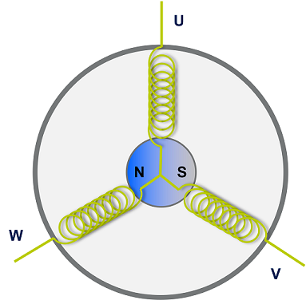
In 6-step driving, the electrical cycle is divided into six commutation steps. At each step, the bus voltage is connected to one of the three-phase windings of the motor while the ground is connected to a second winding, forcing a current flowing through these two windings and generating a stator magnetic field as shown in Figure 2. The third winding remains floating.
Figure 2 : Motor stator and rotor magnetic fields
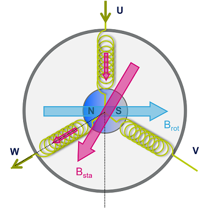
The orientation of the stator magnetic field is changed energizing the windings in the sequence shown in Figure 3.
Figure 3: Motor stator magnetic fields discrete positions
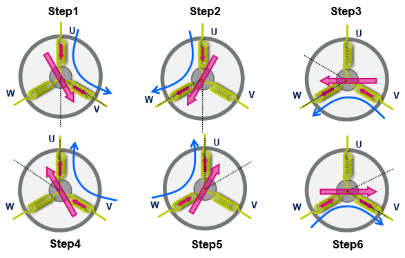
Since the rotor has a permanent magnetic field, the rotating stator magnetic field creates a torque that moves the rotor. The maximum torque is obtained when the electrical angle between the rotor and the stator is 90°. The orientation of the stator magnetic field is changed thanks to the 6-step commutation keeping the motor spinning, as explained in Figure 4.
Figure 4: Motor torque
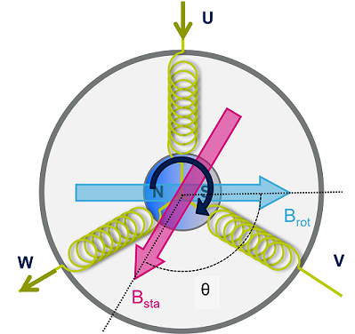
The 6-step firmware reveals the position of the motor rotor every 60 electrical degrees (in sensor-less or sensored mode). Based on this information, it computes the time for the next step commutation and calculates the duty cycles for the PWM signals that drive the output power transistors. These transistors control the motor phase voltages allowing them to reach a target speed.
The 6-step firmware can be viewed as a set of components, each with a different task.
Figure 5: Basic 6-step algorithm structure
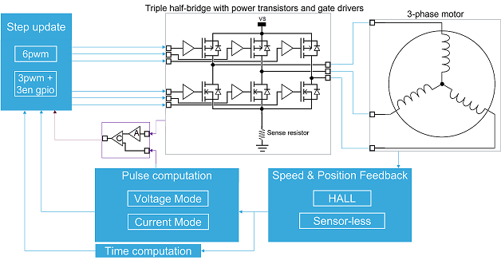
The following list describes the components shown in Figure 5:
The motor speed is controlled by directly varying the duty cycle of the pulse width modulated voltages applied to the motor phases.
The motor speed is controlled by limiting the peak of the current flowing through the active phases.
This driving mode exploits the presence of an amplifier A and a comparator C. The current is controlled by setting the duty cycle of a PWM generated by a timer (REF timer) used as the reference voltage of the comparator C. The output of the comparator triggers the switch-off of the PWMs connected to the motor phases when the amplified sense resistor voltage is greater than the reference voltage.
Figure 6: Current driving mode structure
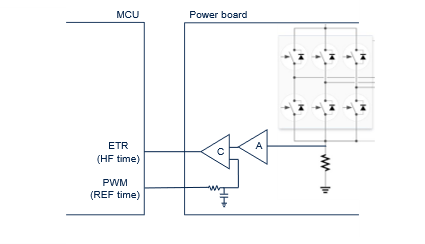
In the sensor-less mode, the position of the rotor is obtained by detecting the zero-crossing of the Back Electro-Motive Force sensed at the floating phase. This is commonly done using an ADC as shown in Figure 7. In particular, when the magnetic field of the rotor crosses the high impedance phase, the corresponding BEMF voltage changes its sign (zero-crossing). The BEMF voltage can be scaled at the ADC input, thanks to a resistor network controlled by a GPIO. When the GPIO output is low, the resistor network divides the voltage coming from the motor phase.
Figure 7: Motor with sensor-less circuit 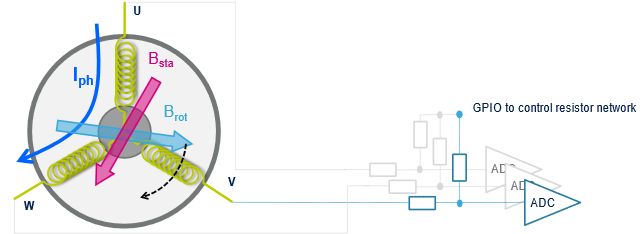
In this driving mode, the positioning of the rotor is obtained by reading the digital signals coming from the Hall sensors (connected to three GPIOs).
During the alignment time, the position of the rotor is acquired and the motor windings are energized accordingly. When a sensor commutation is detected, new status is acquired. At the same time, the step is changed and the PWMs updated accordingly.
The STM32 MC firmware is the heart of the SDK. It provides all the software components needed to control 3-phase motors using the 6-step strategy and integrates these components into an MC subsystem. It offers a versatile set of interfaces that custom applications can use to drive motors according to their needs.
Figure 8 shows the architecture of the STM32 MC firmware.
The firmware consists of the three following functional sets:
Figure 8: STM32 motor control firmware architecture
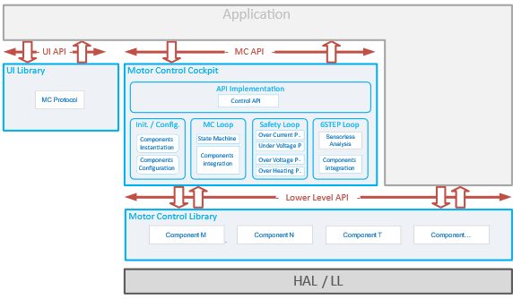
The 6-step MC library is a collection of software components. Each component implements a feature involved in MC such as the speed and position sensing, PID regulator, or motor control algorithms.
For some features, the library provides several components, each containing a different implementation. This allows to efficiently support various hardware configurations. Then, the components to use are chosen depending on the characteristics of the user’s application and are integrated into a motor control firmware subsystem.
Figure 9 summarizes the features provided by the 6-step library as components. The list of most of the components in the 6-step library and their specificities are described in Section 5.1.
Figure 9: 6-step MC library features delivered as components
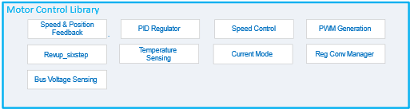
The user interface library or UI library contains software components that deal with the communication between the MC firmware subsystem and the outside world using a serial port. This library is used to allow the STM32 MC WB to connect to the Application and control it with its Monitor feature.
The Motor control cockpit integrates the software components into an MC firmware subsystem and implements the regulation loops. It instantiates, configures, and interfaces the firmware components selected in the 6-step library and the user interface library for the user’s application. The code of the MC Cockpit is generated by STM32Cube according to the characteristics of the application. Thanks to this generation the code of the cockpit only contains what is needed and is thus easily readable.
The motor control firmware subsystem is the firmware library that results from the configuration and generation of a firmware project with the STM32 MC WB / STM32CubeMx pair. Users then build their final application on top of this subsystem, adding their code that uses one of the provided APIs (see below).
Figure 10 provides an overview of this subsystem showing optional and mandatory functional blocks as well as how they interact with one another. Note that only the most important blocks and interactions are shown for the sake of clarity. This figure highlights three sets of functional blocks: the 6-step loop, the reference computation loop and the safety loop. Each of them is made up of one or more components that implement a specific feature of the algorithm.
Figure 10: Motor-control subsystem overview
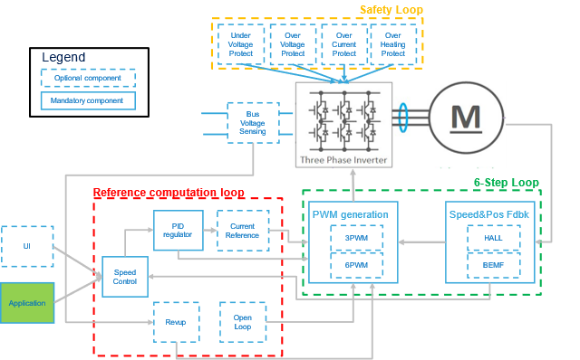
The 6-step loop is the core of the algorithm. It aims to compute the phase voltages and produce the resulting duty cycles to apply to the transistors driving the motor’s phases. It performs the correlation between electrical angle and 6-step tables and updates the timer registers accordingly determining the step change.
The 6-step loop is executed at a high rate, the PWM frequency or its multiple (according to the 6-step loop execution time set by the user). Higher the rate higher the accuracy of the electrical angle control at the expense of a higher computation load. This might be limiting for lower-end microcontrollers.
The purpose of the Reference computation loop, as its name suggests, is to compute the duty cycle references based on targets coming from the application. Usually, the application provides a reference expressed in a way that matches its needs: a speed reference or ramp. The reference computation loop first converts the application target into a phase voltage duty cycle or reference current duty cycle which is then used to generate motor windings PWMs and optionally a current reference PWM.
This process is in force when the motor-control subsystem is executing in closed-loop mode.
However, this is not the only operating mode. Indeed, depending on the chosen Speed and Position Feedback technology, a rev/up phase may be needed that will take over that process until the rotor Position estimation is judged reliable. This is the purpose of the Rev-up Control component.
In addition, some applications may require that the motor control stays in open-loop mode. This case is handled by the open-loop control component that is executed instead of the normal-regulation process.
All these cases fall in the basket of the Reference computation loop that is executed at a medium rate, typically on the SysTick interrupt.
The last set of functional blocks is the Safety loop. This set is called a loop because it consists of functions that get executed periodically. They all deal with features that aim at reacting to conditions that may endanger the system from a hardware point of view: Over and under-voltage protection, overheating protection, and overcurrent protection. In the case of overcurrent protection, the STM32 MC firmware is designed to exploit hardware mechanisms implemented in the STM32 MCUs such as the Timer Break input that accelerate the system reaction to an overcurrent situation.
The Safety loop is executed at the same rate as the Reference computation loop – that is at a medium rate, usually with the SysTick interrupt.
Most of the motor control firmware is organized as a set of software components. A component is a self-contained software unit that defines:
The data placed in the structure of a component are the parameters that characterize this component and that tune its behavior. They fully describe the state of the component. In the motor control firmware, a type is defined to hold these data together. Variables of this type are used as handles on instances of the component.
Figure 11: A component with its handle and its function
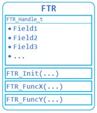
The way this principle is used is very straightforward. Where a feature is needed, the component that matches this feature is selected and a variable of the structure’s type is defined. The variable is then initialized with the feature’s parameters as defined for the application. This is done when the motor control firmware subsystem is initialized by the MC_boot() function.
Finally, during the operation of the motor control firmware subsystem, the functions defined for the component are called where and when needed to benefit from the feature it provides. These functions provide the component’s feature. To perform their task, they expect a pointer on a handle of the component’s structure as the first argument so that they have access to the state and the settings of the instance of the component they work for.
The notion of components makes it easy to offer several implementations of a given feature. For such cases, a generic component is defined for the feature. Its handle contains the data common to the feature whatever its actual implementation is, and its functions operate on these data. In addition, the prototypes of the functions that each component implementing the feature need to provide are defined. These functions are the interface of the components.
Then, these implementing components reuse and extend the handle of the generic component into their own and implement the functions needed to fulfill the feature. This allows for simplified integration and an easy replacement of implementation by another.
Figure 12: A component with its handle and its function
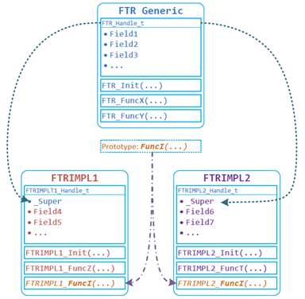
An example of this situation is the set of Speed and Position Feedback components. A generic component is defined, represented by the SpeednPosFdbk_Handle_t handle structure, defined in the speed_pos_fdbk.h file. The handle of this generic component only contains the data purely related to the speed and the position of the motor’s rotor such as the current mechanical and electrical angles, the conversion factor between them, and the limits within which the feature is to be used. And its functions are only about setting and getting these data. Two actual implementations are provided, one that uses Hall Effect sensors and one that implements the feature using a bemf sensing-based algorithm. Each of these two implementations defines its handle that extends SpeednPosFdbk_Handle_t and each defines interface functions based on the same prototypes.
The following sections present an overview of all the components offered by the STM32 MC SDK. For a complete description, refer to the STM32 MC firmware reference manual.
The PWM component is responsible for
A timer peripheral is used to generate the PWM signals and to trigger the measurement of the ADC at the right time. This mechanism is described in more detail in Section 5.1.2.
Concretely, the main task of this component is to enable and disable the outputs and apply the voltages to the proper phases following the 6-step sequence and the driving modes described here below.
This task begins when the motor is started and ends when it is stopped. In addition, these components also play a role in other matters such as the boot capacitor charging which requires switching the low sides transistors on, and the overcurrent protection. Each PWM handles the Timer interrupts that are relevant to its operation. It expects these interrupts to be configured with a given priority level and it defines its functions to handle them.
The Application shall tamper neither with the priorities of these interrupts nor with the order in which they are served in the interrupt handler.
The 6-step library provides all the components needed to support 6-pwm and 3-pwm (plus 3 enable GPIOs) devices. The selection of the component that matches the device topology actually in use by the application is performed through the STM32 MC WB.
These implementations are built on a generic PWM generation component that they extend and that provides the functions and data common to all of them. This base component cannot be used as-is since it does not provide a complete implementation of the features. Rather, its handle structure (PWMC_Handle_t) is reused by all the PWM generation-specific implementations.
The functions, that the generic PWM generation component provides, form the API of the PWM generation feature. Calling those results in calling functions of the component implementing the feature.
Besides the standard driving mode (one phase with PWM applied, one phase floating, and one phase to ground), three additional driving modes are implemented: Mid-Step alignment, fast demagnetization and quasi-synchronous rectification.
These additional modes are implemented in each of the specific PWM generation components. They are explained in detail in the following sections.
In sensor-less driving mode, the motor is first aligned at a predefined and known rotor position before starting the acceleration phase. To minimize the mechanical vibrations and make the start-up more smooth, the alignment position is chosen to be in the middle between adjacent steps. Therefore, instead of the standard 6-step phase polarization table the following one is used, based on the initial step of the sequence and spinning direction. None of the three phases is floating.
| Initial step | Direction | PWM applied | Ground |
|---|---|---|---|
| Step1 | Clockwise | PhaseU + Phase W | Phase V |
| Counter-clockwise | PhaseU | PhaseV + PhaseW | |
| Step2 | Clockwise | PhaseU | PhaseV + PhaseW |
| Counter-clockwise | PhaseU + PhaseV | PhaseW | |
| Step3 | Clockwise | PhaseU + PhaseV | PhaseW |
| Counter-clockwise | PhaseV | PhaseU + Phase W | |
| Step4 | Clockwise | PhaseV | PhaseU + Phase W |
| Counter-clockwise | PhaseV + PhaseW | PhaseU | |
| Step5 | Clockwise | PhaseV + PhaseW | PhaseU |
| Counter-clockwise | PhaseW | PhaseU + PhaseV | |
| Step6 | Clockwise | PhaseW | PhaseU + PhaseV |
| Counter-clockwise | PhaseU + Phase W | PhaseV |
Table 3 : Mid-alignment driving mode table
When the microcontroller switches from one step to the next, the non-excited winding needs a certain demagnetization time. During this time, the current in the winding continues in the same direction but decreases to zero. To accelerate the demagnetization, the PWM signal must be applied to the low-side switch during the step when the demagnetizing current is flowing from the bridge to the motor phases. Refer to Table 4 for a description of the firmware implementation
| Step | MOSfet On(HigSide + LowSide) | Demagnetizationcurrent | PWM applied withFAST_DEMA=1 |
|---|---|---|---|
| Step1 | PhaseU+PhaseV | PhaseW (from bridge to motor) | PhaseV (LS) |
| Step2 | PhaseU+PhaseW | PhaseV (from motor to bridge) | PhaseU (HS) |
| Step3 | PhaseV+PhaseW | PhaseU (from bridge to motor) | PhaseW (LS) |
| Step4 | PhaseV+PhaseU | PhaseW (from motor to bridge) | PhaseV (HS) |
| Step5 | PhaseW+PhaseU | PhaseV (from bridge to motor) | PhaseU (LS) |
| Step6 | PhaseW+PhaseV | PhaseU (from motor to bridge) | PhaseW (HS) |
Table 4 : Fast demagnetization table
The fast demagnetization driving mode can be enabled before the project generation or in the Motor Pilot application. When enabled, the fast demagnetization configuration is applied during the whole step in sensored mode and during only the demagnetization period in sensor-less mode.
By default, the power stage is driven by the algorithm in fast decay mode.
At the start of the OFF-time, both the power MOS of the energized phases are switched off and the current recirculates through the two opposite freewheeling diodes. The current decays with a high di/dt since the voltage across the coil is the power-supply voltage. After the deadtime, the low-side MOS and the high-side MOS in parallel with the conducting diode are turned on in synchronous rectification mode (see Figure 13).
In applications where the motor current is low, the load current may decay completely to zero and rise in the opposite direction.
To avoid this, the quasi-synchronous rectification option may be enabled: The lower power MOS is not turned on preventing the current to reverse (see Figure 14). This driving mode is available only with the devices supporting the 6-pwm configuration and, similarly to the fast demagnetization option, it can be activated in the Motor Pilot application.
The quasi-synchronous rectification and the fast demagnetization modes are incompatible one another.
Figure 13: Synchronous rectification
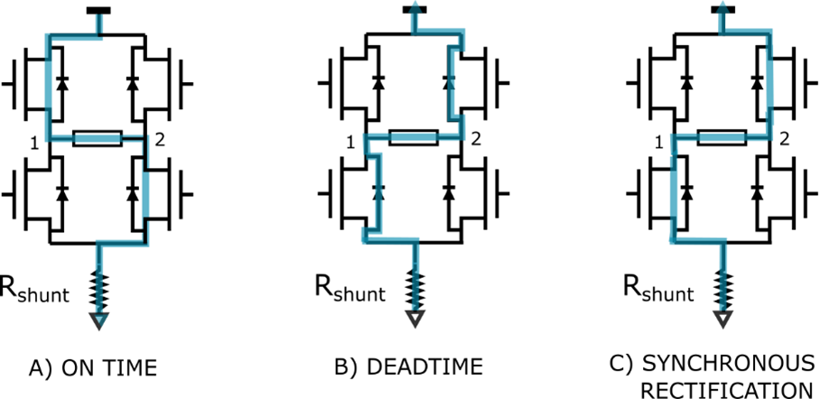
Figure 14: Quasi-synchronous rectification
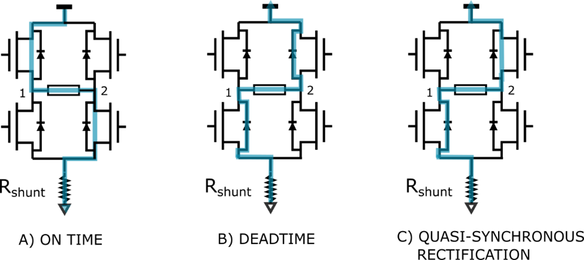
These components provide the speed and the angular position of the rotor of a motor (both electrical and mechanical). While the angular position is crucial to perform properly the step-change at the right time, the rotor speed measurement is needed to close the speed loop.
Two implementations of the Speed and Position Feedback feature are provided by the STM32 MC firmware. One uses sensors embedded in some motors (Hall sensors) and the other one provides an estimation of the speed and the position of the rotor based on the sensing of the Back-EMF of the motor.
These two implementations are built on a generic Speed and Position Feedback component – named the Speed and Position Feedback component – which they extend and which provides the data common to all of them. In addition to that, also the sensing of the Back-EMF is deployed in several components, each of them dedicated to a specific microcontroller family.
| Component | Description |
|---|---|
| Hall Speed and Position Feedback | This component uses the signal coming from three Hall-effect sensors to provide a measure of the speed and the position of the rotor of the motor |
| BEMF Speed and Position Feedback – G4xx micro family | This component uses the sensing of the Back-EMF at the motor phases to provide an estimation of the position of the rotor of the motor and then calculate its speed |
| BEMF Speed and Position Feedback – G0xx micro family | This component uses the sensing of the Back-EMF at the motor phases to provide an estimation of the position of the rotor of the motor and then calculate its speed |
| BEMF Speed and Position Feedback – F0xx micro family | This component uses the sensing of the Back-EMF at the motor phases to provide an estimation of the position of the rotor of the motor and then calculate its speed |
Table 5 : Available Speed and Position Feedback Components
An additional implementation is also present in the firmware: the Virtual Speed and Position Feedback component. This component is only used during the Rev up phase of the motor, while Back_EMF-based implementations are used for closed-loop mode.
Back-EMF sensing components take full ownership of the ADC peripherals they use. The application can use the ADC channels left free by the motor-control subsystem, but it may not interface with these channels directly. The Application shall use the functions of the Regular Conversion Manager (RCM) component. Refer to the Reference Documentation of the MC SDK for a complete description.
Figure 15 shows the synchronization strategy between the TIM1 PWM output and the ADC. Normally the A/D converter peripheral is configured so that it is triggered by the falling edge of TIM1_CH4 during the decay time (PWM-OFF time).
Figure 15: PWM and ADC synchronization
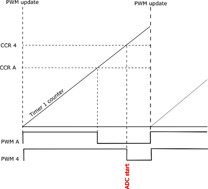
The interrupt triggered by the end of the injected channel conversion manages the polling of the converted value and its evaluation for the estimation of the rotor position.
The Back-EMF waveform of a brushless motor changes along with the rotor position and speed and is in a trapezoidal shape. Figure 16 shows the waveform of the current and back-EMF for one electrification period, where the solid line denotes the current (Ripples are ignored for the sake of simplicity). The dashed line represents the back electro-motive force and the horizontal coordinate represents the electric perspective of motor rotation.
Figure 16: BLDC current and back-EMF waveforms
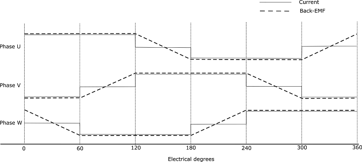
The middle of every two phase-switching points corresponds to one point whose back electro-motive force polarity is changed, the zero-crossing point. Once the zero-crossing point is identified, the phase-switching moment is set after an electrical delay of 30°.
Two different strategies are available for the identification of the zero-crossing point:
This kind of detection can be used with both the driving modes, current and voltage modes. The principle is the one described in Figure 17 where the ADC conversion is triggered during the OFF time of the PWM. At the beginning of every 6-step commutation, the ADC channel corresponding to the floating phase is selected. After a masking period corresponding to the demagnetization period of the floating phase, during which the Back-EMF reading is not reliable, the converted values are compared with a threshold to determine the Back-EMF polarity change. Once the zero-crossing point is detected a delay of 30° electrical degrees, based on the current measured speed, is programmed on a timer, whose update triggers finally the step commutation. Comparison thresholds can be set independently on the direction of change of the Back-EMF (increasing or decreasing).
Note: To avoid damaging the devices, as shown in Figure 17, the minimum of the back-EMF reading is limited by the protection diodes present on the board
Figure 17: Back-EMF sensing and step commutation
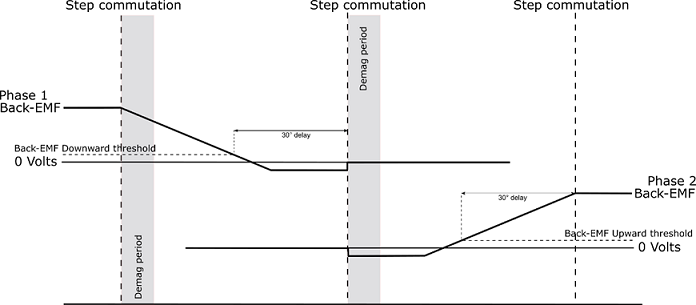
This kind of detection can be used with the voltage driving mode only where the duty cycle is fixed and doesn’t change along the step. The principle is the one described in Figure 18 where the ADC conversion is triggered during the ON time of the PWM. At the beginning of every 6-step commutation, the ADC channel corresponding to the floating phase is selected. After a masking period corresponding to the demagnetization period of the floating phase, during which the Back-EMF reading is not reliable, thanks to a resistor network that allows estimating the voltage of the center-tap point (the common point of the three motor phases), the converted values are compared with a threshold that is ideally half of the Bus voltage.
B-emf threshold (ON-time sensing) = Bus_Voltage / 2
The threshold is set considering a resistor dividing network that rescales the phase voltage to the ADC input range. Once the crossing point based on the current measured speed is programmed on a timer, whose update triggers finally the step commutation. In some cases, the resistor dividing network may include diodes to protect the ADC inputs from overvoltage. The above threshold is then replaced by the following one:
B-emf threshold (ON-time sensing) = (Bus_Voltage / 2) + 0.7
Figure 18: Back-EMF during ON time
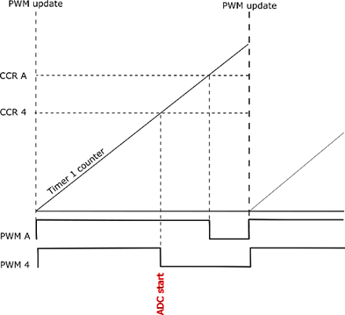
While the Back-EMF sensing during the OFF time is normally performed in sensor-less mode, the user is allowed to enable or disable the sensing during the ON time as long as the voltage drive mode is selected.
When both sensing techniques are used, the algorithm automatically switches between one another based on the PWM duty cycle allowing it to reach close to 100% duty cycle.
Note: Zero-crossing detection thresholds (both with back-emf rising and falling) during the pwm on-time are usually close to half of the bus voltage. Since they are not dynamically calculated by the firmware, user is advised to manually tune and change them through the Workbench user interface if bus voltage is different from the nominal one. Otherwise, "over-current" or "speed feedback" errors may rise
The STM32 MC firmware provides components to report the value of the bus voltage. A measurement of the bus voltage is, of course, needed for features like the under or over voltage Protection.
Two implementations of a bus voltage sensing component are available. One that uses an ADC channel and two big resistors to measure the voltage (the Resistor Divider Bus Voltage Sensor) and another one that actually does not measure anything and only reports a configured value (the Virtual Bus Voltage Sensor).
For its measurements, the resistor divider bus voltage sensor implementation uses a channel of the ADC configured for the current feedback of motor 1, thanks to the regular conversion API. Refer to Section 5.2.4 for more details.
The STM32 MC firmware provides one component to report the motor-control subsystem’s temperature. This component – the NTC Temperature Sensor – acts both as a real temperature sensor that uses an ADC channel to measure the temperature from a probe and as a virtual temperature sensor that reports a configured temperature value.
This section presents some of the drive regulation components that are delivered with the firmware. For complete information on all these components, refer to the STM32 Motor Control Reference Manual.
The PID component provides an implementation of a proportional–integral–derivative controller. This component is primarily used by the reference computation loop in the speed controller.
It comes in two flavors: a full PID using all three terms and a simpler one that only uses the Proportional and Integral terms. The motor-control subsystem uses the latter one.
The Revup component is responsible for starting the motor. Its task begins when the motor is started open-loop and ends when the current control loop can be closed.
This component serves two purposes:
The motor control cockpit plays a central role in a motor-control subsystem; it configures and integrates a few components selected for the MC application. And, in addition, it provides the implementation of the 6-step algorithm, reference computation, and safety loops that match the designed application.
As such, it must support a vast diversity of configurations that lead to a potentially huge and cumbersome source code. To avoid this issue and to provide a code that is as simple as possible, most of the cockpit’s code is generated from the application’s characteristics. Thanks to this generation, only these portions of the code that are needed for the MC system are present in the MC cockpit’s source code.
Despite its changing nature, the code of the MC cockpit is organized in a sole and structured way.
This section lists the most important source files that make the MC cockpit. Refer to the STM32 MC SDK reference documentation (delivered with the SDK) for a complete list of these files and their documentation.
motorcontrol.c, motorcontrol.h:
The motorcontrol.c file mainly contains a function MX_MotorControl_Init() which is used by the application generated by STM32CubeMx to initialize the MC subsystem. Its motorcontrol.h companion file is only useful to the CubeMX generated main.c file to get the prototype of the function it calls.
This pair of files contains the definition and implementation of the high-level Application Programming Interface that the application can use to control the motors. See Section 6.1 for a description of this API. As such, mc_api.h is the file that applications need to include to use it.
The mc_config.c file contains the structures and the data used to configure all the components used by the MC subsystem. The mc_config.h file exports the names of the structures for the application to use as the Lower Level API as described in Section 6.2.
mc_parameters.c, mc_parameters.h:
The mc_parameters.c file contains structures and data that contain constant parameters for the MC subsystem. Its role is similar to the mc_config.c file except that its content can be fully placed in FLASH memory since it is constant. The mc_parameters.h file exports the names of the structures for the application to read them in the scope of the Lower Level API as described in Section 6.2.
mc_types.h:
This file contains type definitions that are used across the motor-control subsystem. In addition, it includes all relevant STM32 Cube LL header files that are needed for the motor-control subsystem.
Motor-control subsystem parameters:
A serie of files is generated that contain a lot of constants – defined as C preprocessor symbols – which are set to values that are meaningful to the MC subsystem and that are used in its code. Some of these files are dedicated to some STM32 family and are only present if the chosen MCU is part of this family. The list of these files:
Interrupt handling:
The motor-control subsystem provides handlers for the interrupts it uses. These are defined in files that depend on the chosen STM32 family (stm32g4xx_mc_it.c for G4xx microcontroller family).
This file contains the implementation of the core of the MC cockpit. It contains the code of the loops described at the beginning of Section 5. More information on them is given below.
The code of each of the three loops that are at the heart of the MC firmware subsystem is distributed into “Task” functions.
The 6-step loop is implemented in the TSK_HighFrequencyTask() function. This function is executed at the PWM frequency rate (That is: once every PWM Period, see Section 5.1.1 PWM generation component). The PWM frequency is the highest in the motor-control subsystem. It is executed in the handler of the interrupt that occurs at each timer update
The main task of this function is to translate the electrical angle into the 6-step sequence and update the PWM duty cycles that are to be programmed in the PWM Timer channels. Hence, the time this function must operate is limited as it needs to complete before the next timer-update event when new PWM duty cycles are taken into account. Failing to execute in this lapse of time results in the 6-step execution error.
The Reference computation loop is implemented in the function TSK_MediumFrequencyTaskM1(). This function needs to be invoked periodically at a frequency that is typically lower than that of the TSK_HighFrequencyTask(). In the STM32 MC firmware subsystem, the functions are called on the SysTick interrupt.
The Safety loop is implemented by the TSK_SafetyTask() function. This function calls one of TSK_SafetyTask_PWMOFF() or TSK_SafetyTask_LSON() depending on the chosen over-voltage protection. TSK_SafetyTask() is invoked periodically at the same frequency as the reference computation loop and on the same interrupt.
The MC subsystem reports the faults it detects to the application. On the fault detection, the MC firmware first executes actions to place the motor hardware subsystem in a safe state, and then it enters a fault state. These actions always result in the faulty motor being stopped.
The faults that are detected are the following:
| Component | Description |
|---|---|
| MC_NO_ERROR | There is no fault currently pending on the motor-control subsystem |
| MC_DURATION | The 6-step loop lasted too long (the PWM timer-update event occurred before the new PWM duty cycle values were available) |
| MC_OVER_VOLTAGE | An overvoltage condition detected on the Bus |
| MC_UNDER_VOLTAGE | An under-voltage condition detected on the Bus |
| MC_OVER_TEMP | The Temperature of the system crossed the maximum threshold |
| MC_START_UP | The startup phase ends before the speed and position estimation is reliable |
| MC_SPEED_FDBK | The speed feedback is not reliable anymore (usually happens when the rotor speed goes too low) |
| MC_BREAK_IN | An overcurrent condition or a general fault signal from a power device embedded protection is detected |
| MC_SW_ERROR | A non-motor dependent error (Pure MC firmware error) is detected |
Table 6 : Detected fault
The handling of faults in the MC firmware involves two states of the MC state machine. When a fault is detected, the MC state machine enters the FAULT_NOW state which indicates that a fault condition currently exists. On entering this state, the PWM output is immediately cut off. The MC state machine remains in this state as long as the fault condition remains valid, meaning as long as the condition that led to declaring the fault is true. When the no-fault condition is not active anymore, the MC state machine switches to the FAULT_OVER state and will remain in that state until the application acknowledges them. On the acknowledgment of the Faults, the MC state machine goes back to the IDLE state and the subsystem is ready to start the motor again (see Section 5.3.3).
There are situations where the application needs to use free channels of the ADC peripheral used by the MC subsystem for phase Back-EMF measurement. As described in Configuring peripherals with STM32CubeMx these ADC channels can be configured with STM32CubeMx.
However, the application must not use these channels directly. It may rather use the API functions described in Programming a regular conversion on a Motor Control ADC, Retrieving the result of a Motor Control ADC regular conversion, and Retrieving the state of a Motor Control ADC regular conversion. Indeed, the instants when the phase Back-EMF measurements are to be made must be set within the PWM period. In the firmware, Injected conversions are used and external triggers coming from the PWM timer start them.
Hence, the Application cannot use injected conversions on these ADC peripherals as they are reserved for motor control and they must avoid disturbing the injected conversion. The purpose of the APIs mentioned here is to allow the application to perform regular ADC conversions without disturbing the motor-control subsystem. Getting a conversion done with them is a three-step process:
1. The MC_ProgramRegularConversion() function is called to request an ADC regular conversion on the given channel and with the given conversion time. The motor-control subsystem then schedules the requested conversion that will occur right after the next Injected conversion, when there is no risk of collision;
2. The Application can then call the MC_GetRegularConversionState() function to determine if the requested conversion is completed.
3. Finally, the Application calls the MC_GetRegularConversionValue() to retrieve the converted value.
Note: The motor-control subsystem will only accept one conversion at a time. So, the application may use the MC_GetRegularConversionState() to determine if the conversion can be handled. In addition, all conversion requests must be performed inside routines with the same priority level.
The MC firmware subsystem maintains a state machine for the motor it controls. The tasks executed on the motor, and the API functions that can be called, are depending on the current state of the state machine.
Figure 19 details the full MC state machine. States are indicated in the blue circles while possible transitions between the states are marked with the arrows.
The actual state machine may be simpler depending on the configured application. Indeed, some states are only needed in specific cases. For instance, the states about motor acceleration and closed-loop switch-over are only useful if the sensor-less mode is used.
The state machine is never directly changed by the application. Its management is handled by the Reference computation loop which is in the TSK_MediumFrequencyTaskM1() function.
Figure 19: Motor state machine
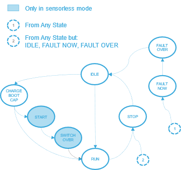
| Component | Description |
|---|---|
| IDLE | The Motor is not spinning, but is ready to start or to align |
| CHARGE_BOOT_CAP | State where the gate driver boot capacitors will be charged |
| START | State where the motor alignment and rev-up steps are intended to be executed. It ends with the validation of the sensor-less estimation of the rotor position |
| SWITCH_OVER | State where the speed loop is closed. The following state is normally RUN |
| RUN | State with running motor. The following state is normally STOP when a stop motor command is executed. |
| STOP | The following state is normally IDLE as soon as conditions for moving state machine are detected (stop procedure is completed) |
| FAULT_NOW | The state machine can be moved from any condition directly to this state by STM_FaultProcessing() function. This method also manages the passage to the only allowed following state which is FAULT_OVER. |
| FAULT_OVER | State where the application is intended to stay when the fault conditions disappear. The following state is normally IDLE. The state machine is moved as soon as the user acknowledges the fault condition |
Table 7 : Motor state machine
The Motor Control API also referred to as the MC API, is the main and most straightforward interface offered to applications for controlling the motors driven by the STM32 MC subsystem.
For the sake of simplicity, the MC API offers one set of functions restricting the number of parameters these functions expect to the bare minimum.
The main purpose of this API is to start, stop the motors, and control their rotation. The control of the rotation of a motor is achieved by programming a speed reference that the PID regulator of the motor-control subsystem will maintain. Such a reference must be set before starting a motor.
The speed reference is programmed as a ramp that moves the actual reference from its current value to its target value in a given time.
A programmed reference or ramp is executed at once if the motor is spinning and steady (Its state machine is in the RUN state). Otherwise, it is buffered until the state machine of the motor reaches the RUN state. Only one reference or ramp can be programmed at a time, the last one replacing the previous.
In addition to the rotation controlling functions, the MC API also provides functions to get the values of various parameters and state variables of the MC subsystem such as the mechanical or electrical speed for instance.
A brief description of the main functions of the MC API consists of is given here along with the usage principles. A complete definition is available in the STM32 MC SDK Reference Manual.
Starts the target Motor. *Before calling this function, a Speed ramp or a duty cycle reference must have been set.
Stops the target Motor. If the target motor is not spinning, this function does nothing. Otherwise, the PWM outputs are switched off, whether the MC subsystem is in a close loop or still in the rev up phase.
Programs a speed ramp on the target motor. If the target Motor is in the RUN state – that is: the Motor is spinning and steady – the ramp is executed immediately. Otherwise, it is buffered until this state is reached.
A speed ramp takes the motor from its rotation speed at the start of the ramp to the hFinalSpeed target speed of the ramp in the hDurations duration.
Stops the execution of the current speed ramp of the target Motor.
Returns true if the last submitted ramp for the target Motor is completed, false otherwise.
Returns the duty cycle reference applied to the output phases.
Returns the state of the last submitted command for the target motor. “Command” means a speed ramp or a duty cycle reference setting.
The returned state is an MCI_CommandState_t enumerable value:
MCI_BUFFER_EMPTY: No command is submitted;MCI_COMMAND_NOT_ALREADY_EXECUTED: A command is buffered but its execution is not completed yet;MCI_COMMAND_EXECUTED_SUCCESFULLY: Execution of the last buffered command is completed successfully;MCI_COMMAND_EXECUTED_UNSUCCESFULLY: Execution of the last buffered command is completed unsuccessfully.Returns the control mode for the target motor. The available return states are MCM_TORQUE_MODE (open-loop operation) and MCM_SPEED_MODE (closed-loop operation).
Returns the drive mode for the target motor. It can be either VM (voltage mode) or CM (current mode).
Returns the direction imposed by the last command on the target motor. The returned value is either 1 or -1.
Returns true if the speed sensor of the target motor provides reliable values.
Returns the last computed average mechanical rotor speed for the target Motor, expressed in dHz (Tenth of Hertz).
Returns the electrical angle of the rotor of the motor.
Acknowledges MC faults pending on the target motor. This function returns true if faults were indeed pending and false otherwise. Refer to Section 5.3.1 for more information on MC fault management.
Returns a bit field showing faults that have occurred since the MC state machine of the target motor was moved to the FAULT_NOW state. Refer to Section 5.3.1 for more information on MC fault management and Section 5.3.3 for a description of the MC state machine.
Returns a bit field showing all current faults on the target motor. Refer to Section 5.3.1 for more information on MC fault management.
Returns the current state of the target motor state machine. Refer to Section 5.3.3 for a description of the MC state machine and of the values of the State_t enumerable.
The low-level application programming interface provided by the MC firmware allows applications that need finer control over the internals of the MC subsystem. This API consists of all the components that are instantiated to form the subsystem. These components can be addressed by the application thanks to their handles. These handles are defined in the mc_config.c file and can be accessed by including the mc_config.h file. For more information, see the STM32 MC SDK reference manual delivered with the SDK.